ChronoCraft
使い方
ChronoCraft（iPhone アプリと Apple Watch アプリ）の使い方を説明します。ボタンや画面の名前は、アプリに表示されるとおりに「」で示します。
アプリは App Store から入手できます（無料）。
1. はじめに
できること
- ケース・ベゼル・文字盤・針・風防・ストラップ・ムーブメント・ローター・裏蓋を、形と素材と仕上げから選び、3D で組み上げます。
- 「構造を見る」で時計をレイヤーに分解し、「動作を見る」でテンプや脱進機の動きをムーブメントの音とともに眺めます。
- 作ったデザインは「マイデザイン」に自動で保存され、iCloud で同じ Apple アカウントの端末の間を同期します。
- 選んだデザインを Apple Watch のアプリに表示し、コンプリケーションや写真の文字盤でも使えます。
最初の 1 分（デザイン例から始める）
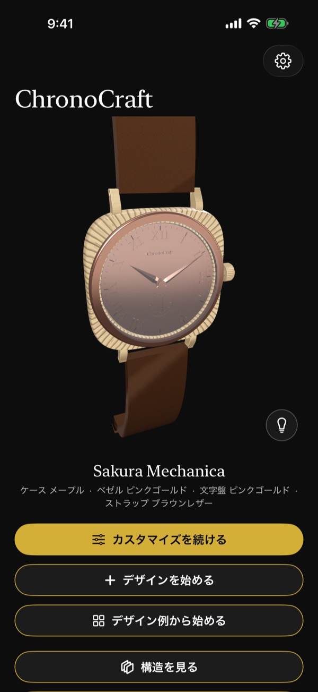
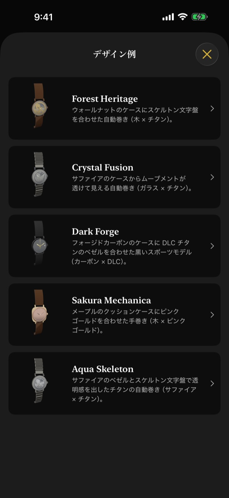
- ホームで、時計の下にある「デザイン例から始める」をタップします。
- 「デザイン例」の一覧（図 2）から好きなデザインをタップします。選ぶと、パーツを選ぶ画面（「パーツ選択」）に進みます。
- 3D の時計の下に並ぶタブでパーツを選び、その下の格子で「素材」を替えてみます。3D の時計がすぐに変わります。
- 変更は自動で保存されます。名前はデザイン例の名前になり、あとで変えられます。
何もないところから作るときは、ホームの「デザインを始める」をタップします。「ベース選択」でムーブメントを選んで「次へ」をタップすると、「パーツ選択」に進みます。名前は「新しいデザイン」になります。続きを作るときは、ホームの金色の「カスタマイズを続ける」をタップします。
ホームの入口
ホームを上へスクロールすると、いま編集しているデザインに対する操作のボタンが並びます（図 3）。「構造を見る」「動作を見る」「名前を変更」「マイデザイン」「共有」「Apple Watch に表示」「写真文字盤用の画像を保存」です。それぞれの使い方は、この先の章で説明します。
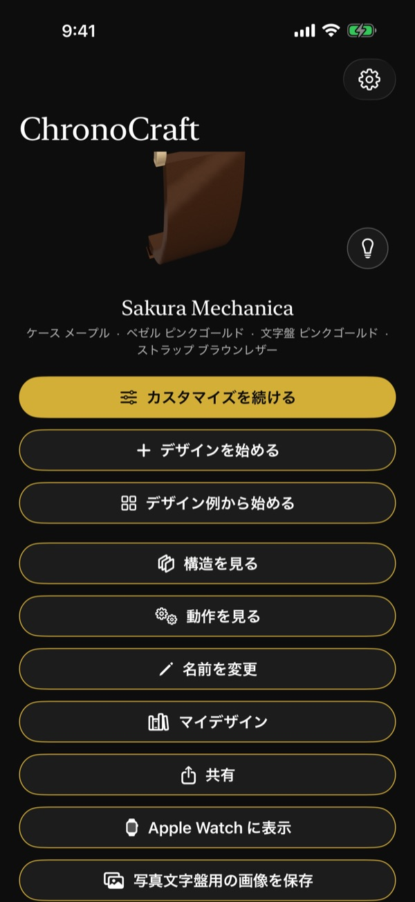
3D の時計の動かし方
- ドラッグで回し、ピンチで拡大・縮小します。
- ダブルタップで正面の向きに戻ります。
- ホーム・「パーツ選択」・「詳細設定」では、しばらく触らないと時計がゆっくり回ります。
2. iPhone: デザインする
パーツを選ぶ（タブ）
「パーツ選択」の画面では、上に 3D の時計、その下にパーツのタブ、さらにその下に選択肢の格子が並びます（図 4）。タブは「ケース」「ベゼル」「文字盤」「針」「風防」「ストラップ」「ムーブメント」「ローター」「裏蓋」で、横にスクロールすると続きが出ます。「ローター」は自動巻きのムーブメントのときだけ表示されます。タブを替えると、そのパーツが見やすい向きに時計が回ります。
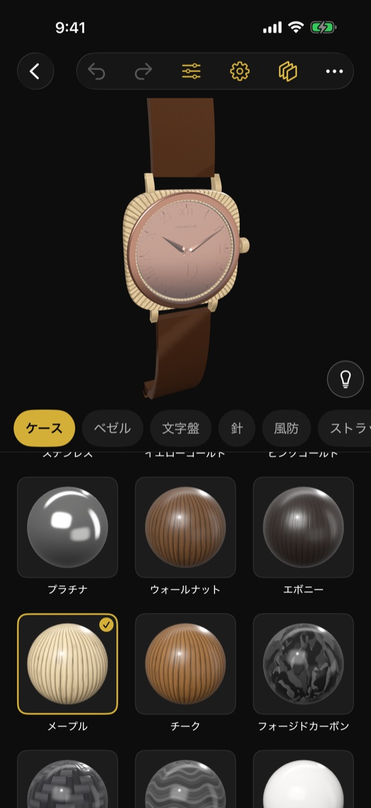
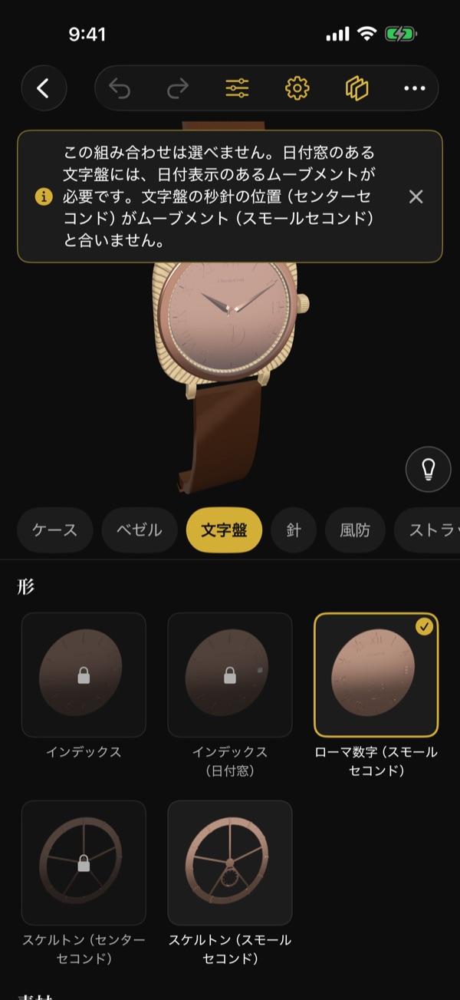
画面の上のツールバー
「パーツ選択」の画面の上には、左に戻るボタン、その右に次のボタンが並ぶツールバーがあります（図 4）。
- 曲がった矢印 2 つ: 「元に戻す」「やり直す」。
- 3 本の線のスライダーの形: 「詳細設定」。
- 歯車: 「ベース選択」（ムーブメントを替える）。
- 重なった板の形: 「構造を見る」。
- 「…」: 入りきらないボタンをまとめたものです。タップすると、「動作を見る」「名前を変更」「マイデザイン」「共有」「Apple Watch に表示」「写真文字盤用の画像を保存」などを選べます（画面の幅によって、ツールバーに直接並ぶボタンの数が変わります）。
形・素材・仕上げを選ぶ
- 「形」: そのパーツの形を選びます（図 5の「形」の格子）。
- 「素材」: 選んだ形で使える素材から選びます。形や素材を選ぶと、素材ごとの短い音と触覚が返ります。
- 「仕上げ」: 金属など仕上げを選べる素材のときだけ表示され、「鏡面」「ヘアライン」「サンドブラスト」から選びます。
選べない組み合わせ
今のデザインでは選べない形・素材・仕上げは、薄く表示され、鍵の印が付きます。それをタップすると、選べない理由が画面の上のバナーに表示されます（図 5。デザインは変わりません）。ほかのパーツに合わせて自動で調整されたときも、その内容がバナーで知らされます。バナーは数秒で消えます。すぐに閉じるときは、バナーの右の × をタップします。
元に戻す・やり直す
ツールバーの曲がった矢印のボタン（左向きが「元に戻す」、右向きが「やり直す」）で、直前の変更を戻したり、やり直したりできます。「詳細設定」の画面でも、右上の同じ矢印で戻せます。
ムーブメントを替える（ベース選択）
「パーツ選択」のツールバーの歯車のボタン（「ベース選択」）で開きます。
- 「巻き上げの方式」で「手巻き」か「自動巻き」を選びます。
- 「ムーブメント」のカードから 1 つ選びます。カードには秒針の位置（「センターセコンド」「スモールセコンド」）、「日付あり」「日付なし」、直径が書かれています。
- 「次へ」をタップします。
今のデザインに合わないムーブメントには「今のデザインでは選べません（選ぶと理由を表示）」と表示されます。見出しの横の「?」のボタンで、手巻きと自動巻き、秒針の位置の説明を読めます。
詳細設定
「パーツ選択」のツールバーの、3 本の線のスライダーの形のボタン（「詳細設定」）で開きます。上に 3D の時計、下に項目が並びます。次の値を変えられます。
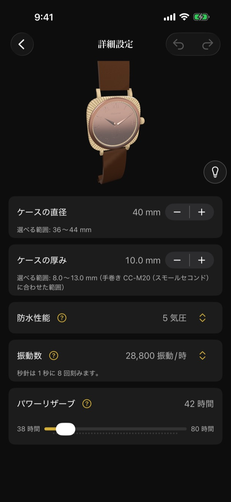
- 「ケースの直径」「ケースの厚み」: 右の ＋ と − で変えます。項目の下に「選べる範囲」が表示されます。厚みは、選んでいるムーブメントに合わせた範囲で選べます。
- 「防水性能」「振動数」: 右の値（上下の矢印の付いた部分）をタップし、一覧から選びます。振動数を変えると、秒針の刻みとムーブメントの音の速さも変わります。秒針が 1 秒に何回刻むかは、項目の下に表示されます。
- 「パワーリザーブ」: スライダーで変えます。スライダーの両端に、選べる最小と最大の時間が表示されます。
項目の横の金色の「?」のボタンで、それぞれの意味を読めます。
ツールバーのほかのボタン
「パーツ選択」のツールバーからは、「構造を見る」「動作を見る」「名前を変更」「マイデザイン」「共有」「Apple Watch に表示」「写真文字盤用の画像を保存」も開けます（ツールバーに入りきらないものは「…」の中にあります）。同じ操作は、ホームの入口のボタンからも選べます。
3. iPhone: 構造を見る
ホームの「構造を見る」、または「パーツ選択」のツールバーの重なった板の形のボタンで開きます。上に 3D の時計、その下に「分解」のスライダー、さらにその下に「組み立てる」「スケルトン」と「レイヤー」の一覧が並びます。
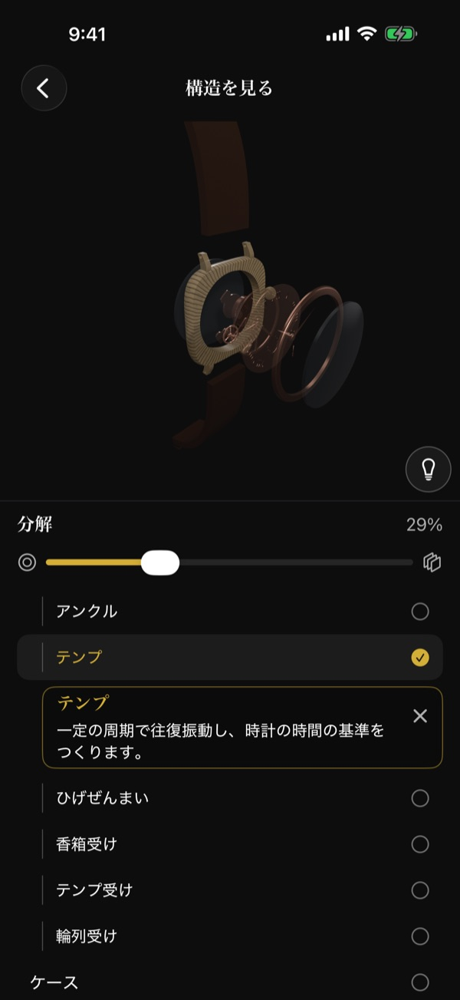
- 「分解」のスライダーを右へ動かすと、時計がレイヤーに分かれていきます。右上に分解の割合が表示されます。層が離れたり重なったりするところで、軽い触覚が返ります。大きく分解すると、裏側から見る向きに変わります。
- 「組み立てる」で、分解する前の姿に戻ります。
- 「スケルトン」をオンにすると、外装を透かしてムーブメントを見せます。
- 「レイヤー」の一覧は、上（風防側）から積み重なる順にパーツとムーブメントの主な部品を並べます。ムーブメントの部品は、少し字下げして並びます。行をタップすると、その部品が 3D で強調され、行の下に名前と役割のカードが表示されます。
- 3D の時計の部品をタップしても選べます。もう一度タップするか、カードの × のボタン（「選択を解除」）で強調を外します。
4. iPhone: 動作を見る
ホームの「動作を見る」、または「パーツ選択」のツールバーの「…」の中の「動作を見る」で開きます。テンプのある裏側から近くで見る向きで始まります。上に 3D の時計、下に操作が並びます。
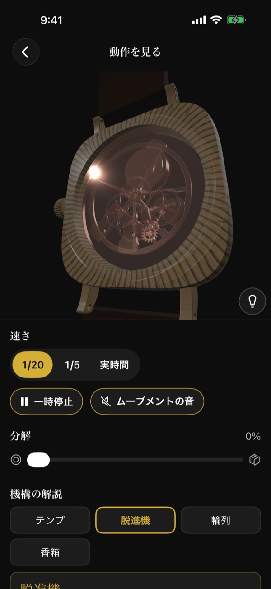
- 「速さ」: 「1/20」「1/5」「実時間」から選びます。遅くすると、テンプや脱進機の動きを追いやすくなります。
- 「一時停止」で止め、「再開」で動かします。
- 「一時停止」の右の「ムーブメントの音」のボタンをオンにすると、振動数どおりのチクタクが動きに合わせて鳴ります。画面を開くたびにオフから始まり、アプリが背面に回ると止まります。アプリの「設定」で音がオフのときは、「設定で音がオフになっています」と表示されます。
- 「分解」のスライダーで、動かしたまま分解して見られます。
- 「機構の解説」: 「テンプ」「脱進機」「輪列」「香箱」「ローター」（自動巻きのみ）から選ぶと、3D で強調して、ボタンの下に、何をしているかと、それを作る部品の名前を説明します。もう一度タップすると強調を外します。
裏蓋がシースルーでないデザインでは、外装を透かしてムーブメントを見せます。ローターはテンプを隠さないように薄く表示されます。
5. iPhone: 照明
3D の時計の右下にある電球のボタン（「照明」）をタップすると、画面の下に照明のパネルが開きます。ホーム・「パーツ選択」・「詳細設定」・「構造を見る」・「動作を見る」で使えます。
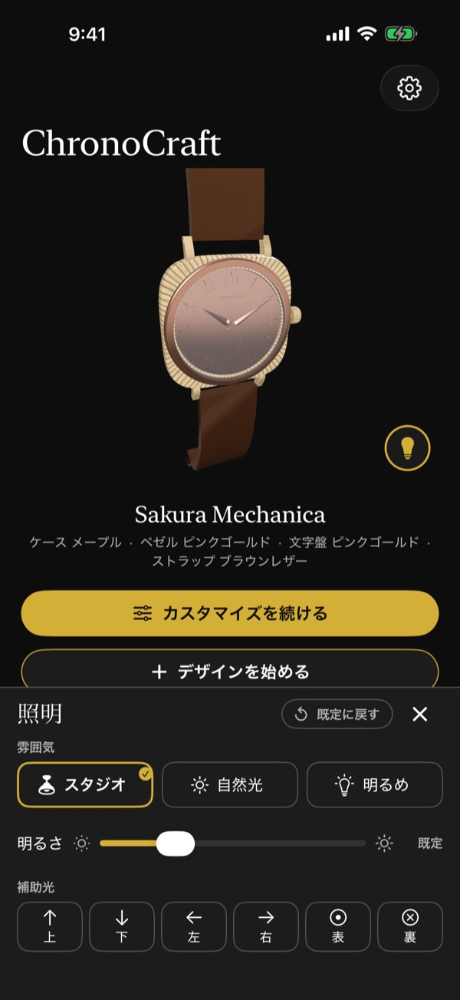
- 「雰囲気」: 「スタジオ」「自然光」「明るめ」から選びます。黒い部品の細部を見たいときは「明るめ」が向いています。
- 「明るさ」: スライダーで全体の明るさを変えます。値は「既定」または既定に対する割合で表示されます。
- 「補助光」: 「上」「下」「左」「右」「表」「裏」の 6 つを、それぞれオン・オフします。補助光の向きは画面に固定されていて、時計を回しても「上」は画面の上側から照らします。
- 「既定に戻す」で最初の照明に戻ります。× のボタン（「閉じる」）、または「照明」のボタンでパネルを閉じます。
照明を既定から変えていると、「照明」のボタンに金色の点が付きます。選んだ照明は画面を移っても、アプリを開き直しても保たれます。照明はデザインの内容ではないため、共有する画像・一覧の見本・Apple Watch の表示は変わりません。
6. iPhone: マイデザイン
ホームの「マイデザイン」、または「パーツ選択」のツールバーの「…」の中の「マイデザイン」で開きます。
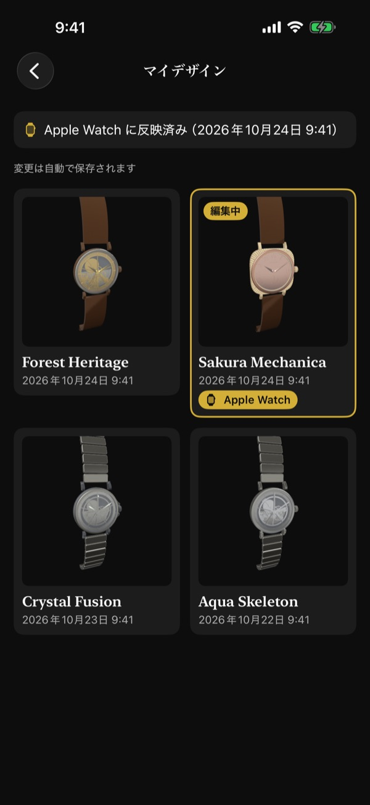
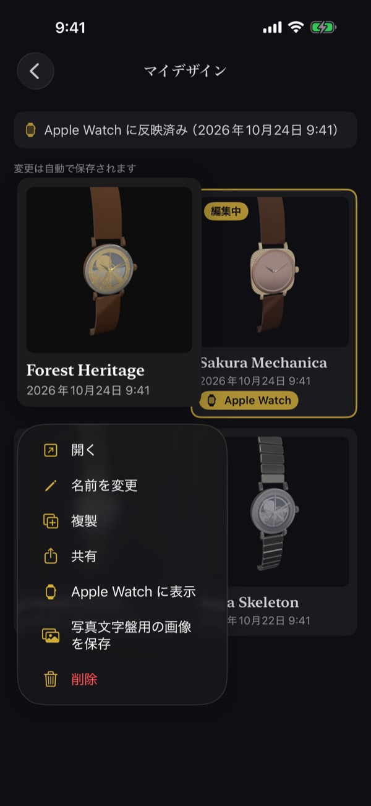
保存
保存の操作はありません（一覧の上にも「変更は自動で保存されます」と表示されます）。「デザインを始める」やデザイン例から始めると、そのデザインがマイデザインに加わり、変更は自動で保存されます。一覧は 2 列の格子で新しい順に並び、各デザインの見本の下に名前と日時が表示されます。いま編集しているデザインには金色の枠と「編集中」が付きます。デザインをタップすると開き、もとの画面に戻ります。
メニュー（長押し）
一覧のデザインを長押しすると、図 11 のメニューが出て、「開く」「名前を変更」「複製」「共有」「Apple Watch に表示」「写真文字盤用の画像を保存」「削除」を選べます。
- 「名前を変更」: 名前は 40 文字まで入れられます。「完了」で確定します。空のまま確定すると、名前は変わりません。
- 「複製」: 同じ内容のデザインが一覧の先頭に加わり、それが編集中になります。
- 「共有」: デザインの画像を作ります。画像ができると共有シートが開きます（閉じたあとは「共有」で開き直せます）。
- 「削除」: 「“名前”を削除しますか？」で「削除」を選ぶと、一覧から消えます。下に「“名前”を削除しました」と「取り消す」が数秒間表示され、「取り消す」で元に戻せます。一覧を離れると削除が確定します。
新しい版のアプリで作られたデザインや、データが壊れたデザインは、「開けません。アプリの更新が必要です」「データが壊れているため読み込めません」と表示され、開けません。
iCloud の同期
- 端末が iCloud にサインインしていて、ChronoCraft の iCloud の利用が有効なら、マイデザインの追加・変更・名前の変更・削除が、同じ Apple アカウントの端末の間で自動で同期されます。
- アプリの中に同期の切り替えはありません。端末の「設定」の iCloud の項目に従います。
- iCloud を使っていないときは、一覧の上に「この iPhone の中だけに保存されています」と表示されます。すべての操作はそのまま端末の中で使えます。
- オフラインの間の変更は、通信が戻ると反映されます。
- 照明・音と触覚の設定・Apple Watch に表示するデザインの選択は同期されず、その iPhone の中だけに保たれます。
7. Apple Watch に表示する
送り方
- Apple Watch に ChronoCraft を入れておきます。
- マイデザインでデザインを長押しし、メニュー（図 11）から「Apple Watch に表示」を選びます。いま編集しているデザインなら、ホームの「Apple Watch に表示」、または「パーツ選択」のツールバーの「…」の中の「Apple Watch に表示」でも送れます。
Apple Watch に表示できるデザインは 1 つです。別のデザインで「Apple Watch に表示」を選ぶと、そちらに替わります。選んだデザインには、一覧で金色の「Apple Watch」の札が付きます（図 10の「Sakura Mechanica」）。選んだあとにデザインを直すと、変更も自動で Apple Watch に送られます。やめるときは「Apple Watch に表示しない」を選びます。Apple Watch はデザイン例の表示に戻ります。
反映の状態の表示
デザインを選んでいる間、マイデザインの一覧のいちばん上に、時計の印とともに状態が表示されます（図 10では「Apple Watch に反映済み（2026年10月24日 9:41）」）。
- 「Apple Watch への反映を待っています」: 送っている途中、または Apple Watch がまだ受け取っていません。
- 「Apple Watch に反映済み（時刻）」: その時刻に Apple Watch に反映されました。
- 「Apple Watch に送れませんでした。次に接続したときにもう一度送ります」: 次に接続したとき、自動でもう一度送ります。
- 「Apple Watch がペアリングされていません」: iPhone に Apple Watch がペアリングされていません。
- 「Apple Watch に ChronoCraft を入れると表示されます」: Apple Watch に ChronoCraft が入っていません。
- 「Apple Watch の ChronoCraft を更新してください」: Apple Watch のアプリが古いため表示できません。
- 「選んだデザインを Watch に反映できません」: 選んだデザインが読み込めなくなりました。Apple Watch は最後に受け取ったデザインを表示し続けます。
届くまでの時間
Apple Watch が iPhone の近くにあるとき、Watch アプリを開いている間、または閉じた直後は、数秒〜30 秒ほどで反映されます。それ以外のときは、次に Watch アプリを開いたときに反映されます（watchOS がアプリを背景で起こしたときに反映されることもあります）。接続されていなかったときも、次に接続したときに最後の状態が届きます。
8. Apple Watch: 操作
Watch アプリを開くと、選んだデザインの時計が現在時刻を指して表示されます。まだデザインを受け取っていないときは、デザイン例「Forest Heritage」と「iPhone で選ぶと自分の時計になります」の案内が表示されます。受け取ったデザインは Apple Watch に保たれ、iPhone が近くになくても表示できます。
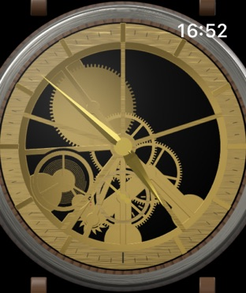
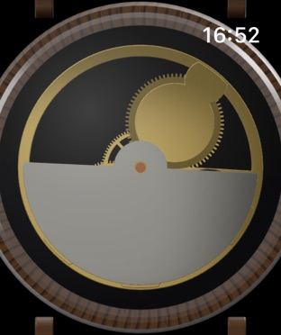
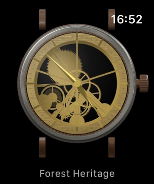
- タップで表と裏: 時計の画面をタップすると、表（文字盤、図 12）と裏（裏蓋、図 13）が切り替わり、触覚が返ります。裏蓋がシースルーなら、テンプ・脱進機・輪列が振動数どおりに動いて見えます。裏では、「全体」の大きさのとき時刻が下に小さく表示されます（拡大するほど、下の文字は薄くなって消えます）。最後に見ていた向きは覚えています。
- デジタルクラウンで拡大と縮小: 回すと、時計全体が収まる大きさ（「全体」、図 14）から、文字盤が画面いっぱいになる大きさ（「拡大」、図 12）まで、なめらかに変わります。初めて開いたときは「拡大」です。大きさは覚えていて、次に開いたときや新しいデザインを受け取ったときも同じ大きさで表示します。
- 長押しでムーブメントの音: 時計の画面を約 0.5 秒押し続けると、時計を耳に当てたようなチクタクが、押している間だけ鳴ります。指を離すと止まり、表と裏は切り替わりません。長押しの動作は iPhone のアプリの「設定」の「Apple Watch の長押し」で選びます（「ムーブメントの音」または「なし」）。
- 腕の傾き: 手首を上げて Watch アプリを見ている間、腕を傾けると、風防（裏ではシースルーの裏蓋）の映り込みが動きます。自動巻きのデザインでローターが見えるときは、ローターが重りのように揺れます。
- 常時表示のとき: 手首を下ろすと、画面が暗めになり、秒針は表示されず、ムーブメント・ローター・映り込みの動きは止まります。時針と分針は 1 分ごとに進みます。手首を上げると、すぐに動きが戻ります。
9. Apple Watch: 文字盤で使う
Apple Watch の文字盤そのものは、アプリから作れません（watchOS の決まり）。代わりに、次の 2 つの方法で、いつもの文字盤に ChronoCraft の時計を置けます。
コンプリケーション
- Apple Watch の文字盤を長押しし、「編集」をタップします。
- 「コンプリケーション」の画面までスワイプし、置きたい枠をタップして ChronoCraft を選びます（図 15）。
- 円形: 選んだデザインの小さなアナログ時計を表示します。
- 長方形: 文字盤の絵と時針・分針を表示します。
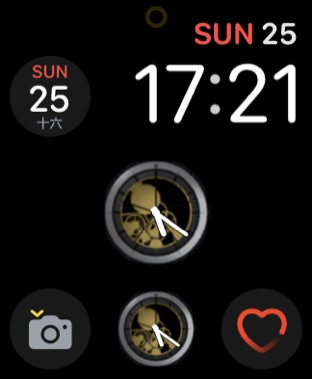
針は 1 分ごとに進み、秒針はありません。Apple Watch に表示するデザインを替えると、コンプリケーションも替わります。タップすると Watch アプリが開きます。
写真の文字盤
- マイデザインでデザインを長押しし、メニュー（図 11）から「写真文字盤用の画像を保存」を選びます（いま編集しているデザインなら、ホームの「写真文字盤用の画像を保存」でも選べます）。
- 初めてのときは、写真への追加の許可を求められます。許可すると画像が作られ、「写真文字盤用の画像」の画面に「写真に保存しました」と表示されます（図 16）。「閉じる」または右上の × で閉じます。
- 画面の案内のとおり、iPhone の Watch アプリ → 文字盤ギャラリー → 写真 で、保存した画像を選び、写真の文字盤に設定します。
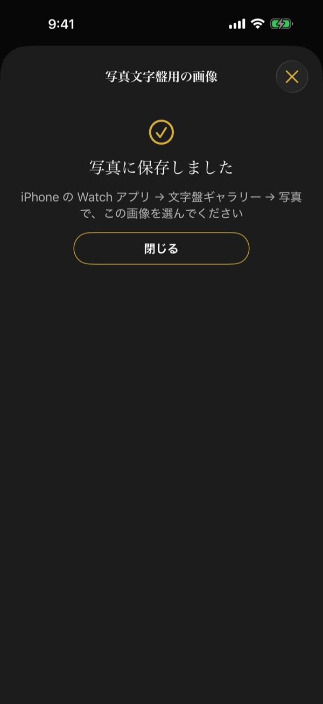
画像は文字盤を正面から見た姿で、針は入りません（写真の文字盤が時刻を重ねて表示するため）。日付窓には数字が入りません。画像の大きさは、ペアリングしている Apple Watch の画面に合わせます。写真への追加を許可していないときは「写真への保存が許可されていません」と表示されるので、「設定を開く」から許可してください。
10. 設定
ホームの右上の歯車のボタンで「設定」を開きます。
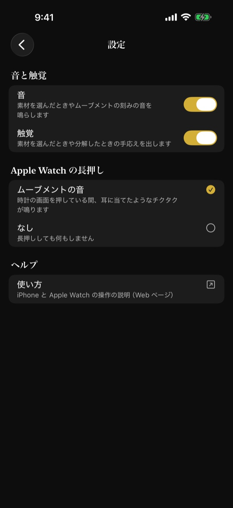
- 「音と触覚」: 「音」と「触覚」を、右のスイッチでそれぞれオン・オフします。オフにすると、iPhone と Apple Watch のこのアプリの音（または触覚）がすべて止まります。最初はどちらもオンです。
- 「Apple Watch の長押し」: 時計の画面を長押ししたときの動作を、「ムーブメントの音」か「なし」から選びます。選んでいるほうに金色の印が付きます。
- 「ヘルプ」の「使い方」: この使い方のページを Web ブラウザで開きます。
設定は自動で Apple Watch に送られ、デザインと同じ時機に反映されます。Apple Watch がペアリングされていない、または ChronoCraft が入っていないときは、そのことが「設定」に表示されます。
端末の設定との関係
- iPhone や Apple Watch が消音モードのときは、音は鳴りません。
- 端末の設定でシステムの触覚がオフのときは、触覚は出ません。
- 音の大きさは端末の音量に従います。iPhone では、ほかのアプリの音楽を止めずに重ねて鳴らします。
- Apple Watch でイヤホンの音楽などが再生中のときは、ムーブメントの音の代わりに、1 秒に 1 回の触覚で刻みます。
- Apple Watch の触覚が分かりにくいときは、Apple Watch の「設定」の「サウンドと触覚」で、触覚を「はっきり」にしてください。
11. アクセシビリティ
VoiceOver
- iPhone の 3D の時計では、操作の一覧から「左へ回す」「右へ回す」「拡大」「縮小」「正面に戻す」を選べます。
- マイデザインの一覧の各デザインでは、操作の一覧から「開く」「名前を変更」「複製」「共有」「Apple Watch に表示」「写真文字盤用の画像を保存」「削除」を選べます。VoiceOver を使っているときは、削除を取り消せる時間が長くなります（約 10 秒）。
- 画面の上のバナー（選べない理由など）は、VoiceOver を使っている間は自動では消えません。
- Apple Watch の時計は、デザインの名前、表か裏か、現在時刻を読み上げます。操作の一覧の「裏を見る」「表を見る」で表と裏を切り替えます。
- Apple Watch の時計の大きさは、上下のスワイプで調整します（4 回で「全体」から「拡大」まで）。今の大きさを「全体」「拡大」「全体と拡大の間（割合）」で読み上げます。
- アプリの「設定」で音がオンのときは、Apple Watch の操作の一覧の「ムーブメントの音を聞く」で、ムーブメントの音を 5 秒間鳴らせます。
視差効果を減らす
- iPhone: 3D の時計は自動で回らず、向きの変化は動きなしで切り替わります。
- Apple Watch: 映り込みは変わらず、ローター・テンプ・脱進機・輪列は止まった姿で表示され、表と裏は回転の動きなしで切り替わります。針は現在時刻を指して動きます。長押しのムーブメントの音は振動数どおりに鳴ります。
文字の大きさ
端末の文字の大きさの設定に合わせて、文字が大きくなります。大きな文字では、選択肢や一覧が 1 列に並び、説明は折り返して全文を表示します。
12. 困ったときは
よくある質問はサポートをご覧ください。ご質問・不具合のご報告・ご意見は info@kamkam.me までお寄せください。